Safe Trajectory Tracking under Motion Uncertainty
A differential-drive robot has to follow a figure-eight past four circular obstacles. Its commands are deterministic, but every half-second Gaussian noise pushes its position and heading off the predicted path. I compared three controllers for this task: a ten-step certainty-equivalent controller (CEC) that replans with the noise set to zero, tabular generalized policy iteration (GPI) on a discretized MDP, and GPI with a compressed radial-basis-function (RBF) value function.
The short version: CEC tracks the reference most closely and collides in every noisy episode. Tabular GPI tracks less closely but keeps a margin sized to the noise, and at high noise it takes a longer route around the tightest gap. The RBF version saves memory and loses most of that safety. The environment turns out to contain a five-centimeter gap that the reference drives straight through, and most of the story is about how each method handles that gap.
A follow-up at the end of the post changes part of this picture. Giving CEC the same calibrated collision probability as GPI first made it worse; it also needed GPI's value function and GPI's plan. Along the way it turned out that GPI's low collision rates at moderate noise came partly from how collisions were counted, only at the samples: GPI had learned to cross the gap at full speed, so that its two samples land on either side. Checked along the path, it collides in 72.5% of episodes at noise ×0.5, not 5.5%. A risk term that looks along the whole step closes the loophole and shows what the gap really costs.
The setup
The robot state is \(x_t = (p_t, \theta_t)\) and the control is \(u_t = (v_t, \omega_t) \in [0.1, 1] \times [-1, 1]\). The kinematics are integrated exactly over \(\Delta = 0.5\) s, then noise \(w_t \sim \mathcal N(0, \mathrm{diag}(\sigma)^2)\) with \(\sigma = (0.04, 0.04, 0.004)\) is added. With the tracking error \(e_t = (p_t - r_t,\ \theta_t - \alpha_t)\), the objective is
\[ V^*(\tau, e) = \min_\pi \ \mathbb E \Big[\sum_{t \ge \tau} \gamma^{t-\tau} \big(\tilde p_t^\top Q \tilde p_t + q (1-\cos\tilde\theta_t)^2 + u_t^\top R u_t\big)\Big] \quad \text{s.t.}\ \ \tilde p_t + r_t \in \mathcal F , \]where \(\mathcal F\) is the square \([-3,3]^2\) minus the obstacles inflated by the robot radius (0.5 + 0.3 = 0.8 m). Every method uses \(Q = 10 I\), \(q = 10\), \(R = 0.1 I\) and \(\gamma = 0.95\). I scale the noise by \(k \in \{0, 0.25, 0.5, 1, 2\}\) and run 200 episodes of 240 steps at each non-zero level. For a given seed, every controller sees exactly the same noise draws, so all comparisons are paired. GPI and RBF are trained separately for each noise level, with that level's noise model. A collision means a sampled robot position inside an inflated obstacle.
How each controller works
CEC. A ten-step multiple-shooting NLP solved by IPOPT at every step, with the noise set to zero. The obstacle constraints \(\|p_k - c_i\|^2 + s_{ik} \ge 0.8^2\) use slack variables with an exact L1 penalty, so the problem stays solvable after noise has pushed the robot inside an obstacle. The NLP is built once, and each solve is warm-started from the previous solution.
Tabular GPI. The grid has 100 time steps × 29 × 29 position-error nodes (0.1 m spacing near zero, coarser farther out) × 40 heading nodes, which is 3.36 M states, with 110 controls. For every state–control pair, the next-state mean is combined with a 27-node Gauss–Hermite rule for the noise, and each node spreads its probability over the 8 vertices of its grid cell. Transitions are recomputed on the GPU during every sweep instead of being stored, so training fits in under 1 GB. Collisions enter the stage cost as \(\lambda \cdot P(\text{next position hits an obstacle})\) with \(\lambda = 1000\). Online, the controller does a one-step lookahead from the robot's exact continuous state.
Collision probability. For one obstacle, the probability that the next position lands inside the inflated disk is a non-central \(\chi^2\) CDF. The four inflated disks do not overlap, so their probabilities add exactly; a 0.5 mm lookup table keeps this fast on the GPU. The additive form matters in the gap: a noisy landing can hit the disk on either side. Treating the disks as independent events would put the one-step risk at the gap center at 45.7% instead of 51.0% (noise ×1).
RBF GPI. Gaussian kernels sit on a sub-lattice of the grid, giving 450 k weights (7.5× fewer than the table). The fit is a normalized-kernel averager, which keeps the projected Bellman operator a contraction. The controller evaluates the value function exactly as the Bellman backup does during training.
A five-centimeter gap
Before running any controller, I checked the geometry. The reference itself passes inside the inflated obstacles C1 and C2, so perfect tracking means collision. Worse, the gap between inflated C1 and inflated C3 is only 5.1 cm, and C2 and C4 leave the same gap. At noise ×1, a single sample at the middle of that gap collides with probability 51%. A controller has two options: keep some margin inside the gap, or leave the reference and take a longer route around C3.
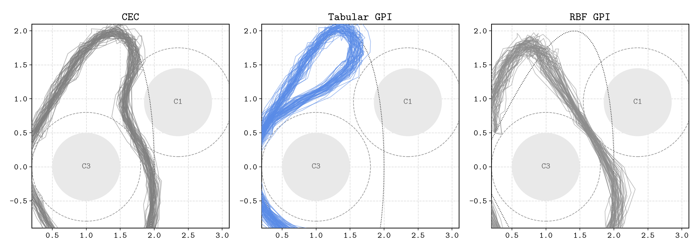
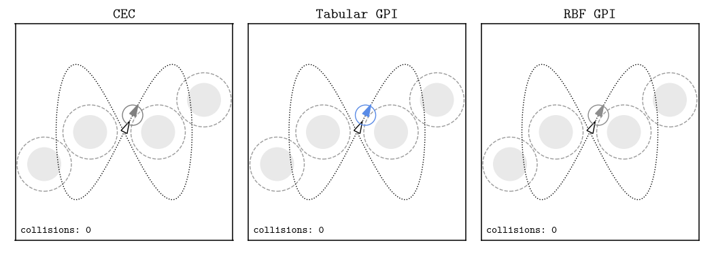
Results at a glance
| collision rate (%) | steps until first collision | ||||||
|---|---|---|---|---|---|---|---|
| noise | CEC | GPI | RBF | CEC | GPI | RBF | |
| ×0.25 | 100 | 0 | 4 | 28 | 240 | 235 | |
| ×0.5 | 100 | 5.5 | 44.5 | 27 | 235 | 188 | |
| ×1 | 100 | 41.5 | 91.5 | 24 | 190 | 102 | |
| ×2 | 100 | 20.5 | 100 | 19 | 219 | 40 | |
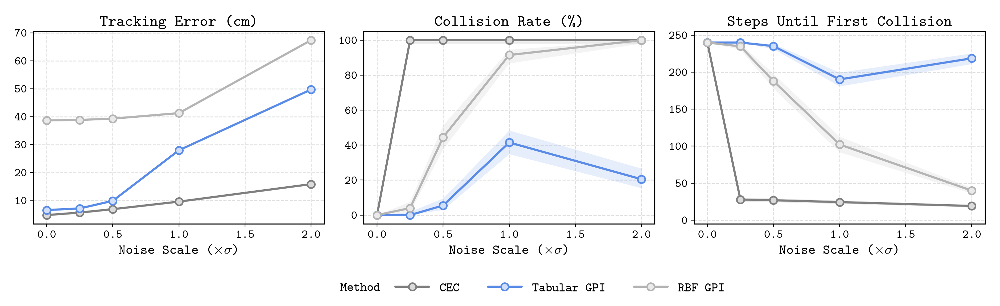
At noise ×1, CEC has the lowest tracking error (9.6 cm), ahead of tabular GPI (28 cm) and RBF GPI (41 cm). But CEC reaches an obstacle after 24 steps on average, while tabular GPI lasts 190 steps and RBF 102. Low tracking error and safety pull in opposite directions here, because the most accurate way to follow this reference runs through an obstacle.
Without noise, CEC is the most accurate controller (4.7 cm, against 6.5 cm for tabular GPI and 39 cm for RBF), and none of the three touches an obstacle at a sampled state. CEC gets that accuracy by riding the constraint: its sampled clearance is exactly zero, and between two samples the robot's actual arc cuts 1.7 cm into the obstacle. Tabular GPI stays about 3.4 cm clear at the samples and clears the obstacles along the continuous path as well.
The first contact
The simulator keeps running after a collision, so the full-episode tracking cost also includes behavior after the safety task has already failed. The time of the first contact is a cleaner safety measure.
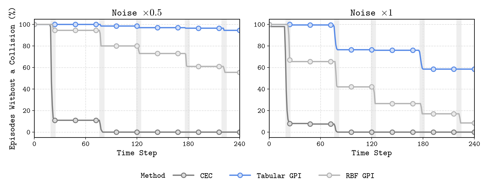
CEC loses about nine in ten episodes at its very first pass through the gap. Its optimum sits exactly on an active constraint, so symmetric noise pushes it across about half the time, however small the noise is. At noise ×0.25, where CEC and tabular GPI take the same route through every gap, the median minimum clearance is −1.7 cm for CEC and +2.1 cm for GPI; the collision rates are 100% and 0%. RBF survives the first gap more often than CEC but keeps losing episodes at every later pass. Tabular GPI loses episodes mainly at the left-hand gap, which it keeps using at noise ×1.
Route and margin
The tabular policy changes its route as the noise grows. At noise ×0.5 it goes through every gap on the reference and collides in 5.5% of episodes. At ×1 it takes the inner detour on the right-hand lobe but keeps the left-hand gap, using 40% of the gap passages; it collides in 41.5% of episodes. At ×2 it avoids every gap, and the collision rate falls to 20.5% even though the noise doubled. Its tracking error rises from 9.9 to 28 to 50 cm across those three levels: the safer high-noise policy pays for the detour. At ×0.5 and ×1 it crosses the gaps it uses at full speed; What the samples miss below shows what that hides.
Where GPI's margin comes from
Tabular GPI uses the noise model in two places: in the Bellman transition (the expected value over noisy next states) and in the one-step collision probability. To see which one produces the margin, I retrained the noise ×1 policy with each part switched independently and evaluated all four on the same 200 episodes.
| Bellman transition | risk σ | collision rate (%) | collision steps |
|---|---|---|---|
| Gaussian | 4 cm | 41.5 | 0.51 |
| deterministic | 4 cm | 38.5 | 0.43 |
| Gaussian | 1 cm | 97.0 | 3.30 |
| deterministic | 1 cm | 98.5 | 3.74 |
Switching the transition noise on or off makes no measurable difference (paired exact McNemar p = 0.53). Setting the collision probability to the true noise level changes the selected route and removes most collisions (p < 10−30). With 10 cm grid cells and 4 cm of noise, averaging the noise over a piecewise-linear value barely changes it. What matters is a correctly calibrated collision probability, propagated backward in time by dynamic programming. This holds for this grid, this layout and this penalty; it does not mean stochastic transitions never matter.
The price of avoiding the gap
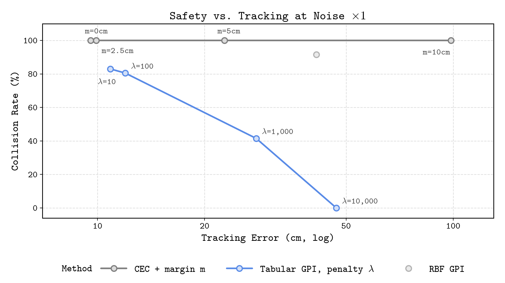
Tightening CEC's obstacle constraints by a margin m does not help at this noise level: every margin still collides in all 200 episodes. Beyond 2.5 cm (half the gap), the gap becomes infeasible, and the ten-step NLP either pushes through on its slack variables or stalls at the entrance, reaching 99 cm of tracking error at m = 10 cm. Sweeping GPI's risk weight λ instead moves the policy smoothly along a trade-off. At λ = 10 or 100, it uses every gap and collides in 83% or 80.5% of episodes. At λ = 1,000, it detours on one lobe (41.5%). At λ = 10,000, it avoids both gaps and no collision was observed in 200 episodes, at 47 cm of tracking error.
Compressing the value function
The RBF averager stores 450,000 weights instead of 3.36 million table entries, and it costs safety at every noise level: 44.5% against 5.5% collisions at noise ×0.5, and 91.5% against 41.5% at ×1. The figure shows why.
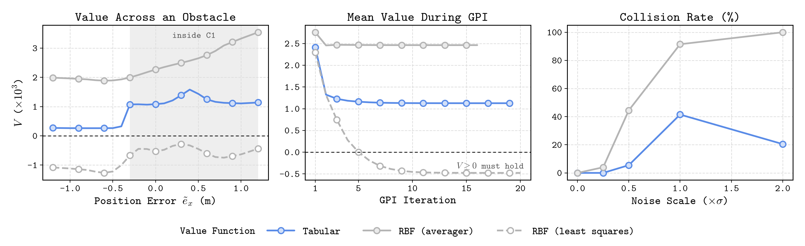
The table jumps sharply at the obstacle edge. Averaging smooths the edge away and spreads the large in-obstacle values into free space, which lifts the whole value function and erases the small difference between "through the gap" and "around it". The blur is not confined to obstacle boundaries either: on noise-free segments more than 0.3 m from any obstacle, the tracking error is 33 cm for RBF and 1.6 cm for the table. The compression applies to the stored parameters; training still renders the value on the full grid (877 MB of GPU memory against 852 MB).
A plain least-squares fit of the same features fails differently. Every cost is non-negative, so \(V \ge 0\), yet fitted policy iteration converges to a value function that is negative on 76% of states. A least-squares projection is not a non-expansion: it rings near the steep collision penalty, and the greedy minimum picks exactly the points where the fit undershoots. The resulting controller ends up 2.2 m from the reference on average. A smooth fit blurs the value function; a non-contractive fit converges to the wrong one.
Does the starting phase matter?
The default episode starts the robot two reference steps ahead of its clock, which creates a 0.56 m initial error, and runs for 2.4 periods of the figure-eight. To rule out that particular start, I also ran noise ×1 from four starting phases, with the robot placed exactly on the reference, for exactly two periods each.
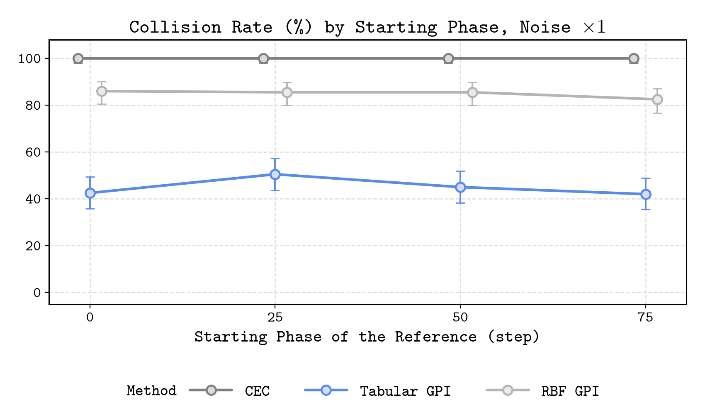
CEC collides in all 200 episodes from every phase, tabular GPI in 42–50.5%, and RBF GPI in 82.5–86%. The ordering holds from every starting phase; the differences between phases are within the intervals.
Compute
| controller | time per step (ms) |
|---|---|
| CEC (10-step NLP) | 5.36 |
| tabular GPI, one-step lookahead | 1.26 |
| tabular GPI, table lookup | 0.16 |
| RBF GPI, one-step lookahead | 1.23 |
GPI moves the hard work offline: one training sweep over the 3.36 M-state grid takes about 8.5 s on an L40S, and a full policy takes a few minutes. All controllers are far below the 500 ms control period, so online speed is not what separates them here. Pure table lookup is the fastest option, but it rounds the robot's state to the nearest grid node and gives up the margin that the lookahead keeps.
Giving CEC the noise model
The comparison so far mixes two differences between the controllers: GPI knows the noise level, and GPI plans over an infinite horizon. To separate them, I gave CEC exactly GPI's stage cost, including the calibrated collision probability with the same \(\lambda = 1000\) and noise level, and kept the rest of CEC: noise-free predictions, ten steps, and IPOPT warm-started from the previous plan. Along the noise-free prediction, this is the objective of the ablation's GPI with a deterministic transition, which collides about as often as the full policy (38.5% against 41.5%).
The probability enters as a penalty, not as a constraint. Chance-constrained planners bound it instead (Blackmore et al., 2011; Zhu & Alonso-Mora, 2019). With a fixed per-step noise level, such a bound amounts to a margin on every obstacle, so the CEC margins of 2.5, 5 and 10 cm tested earlier are per-step risk bounds of 27%, 11% and 0.6%. Inside the gap no bound below 51% can be met, which is why those runs fell back on their slack variables.
| collision rate (%) | tracking error (cm) | ||||||||
|---|---|---|---|---|---|---|---|---|---|
| ×0.25 | ×0.5 | ×1 | ×2 | ×0.25 | ×0.5 | ×1 | ×2 | ||
| CEC | 100 | 100 | 100 | 100 | 5.6 | 6.9 | 9.6 | 15.8 | |
| risk-aware CEC | 100 | 81.5 | 100 | 96.5 | 2.2 | 31.5 | 80.2 | 101 | |
| + constraints | 0.5 | 79 | 100 | 96 | 6.4 | 41.4 | 79.3 | 98.3 | |
| + GPI value | 0 | 54.5 | 78 | 34 | 6.6 | 35.2 | 34.6 | 49.0 | |
| tabular GPI | 0 | 5.5 | 41.5 | 20.5 | 7.1 | 9.8 | 27.9 | 49.7 | |
The first version made CEC worse. It collided in every episode at noise ×0.25, even though its tracking error fell to 2.2 cm, and in 81.5–100% of episodes at higher noise, with tracking errors up to a meter. Two separate problems caused this.
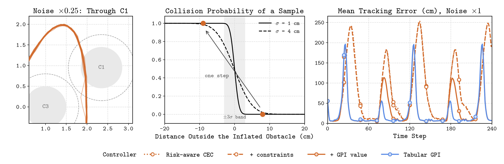
The probability has no slope where the plan is. The collision probability of a sample rises from zero to one within about three standard deviations of the obstacle's edge, a 6 cm band at noise ×0.25. Near C1, consecutive predicted positions are about 17 cm apart, so a plan can put one position just before the band and the next deep inside it, where the probability is one and its gradient is zero. Nothing then pushes the plan back out, and the controller follows the reference straight through C1, 40 cm deep in the median episode; it does the same without any noise. Keeping CEC's obstacle constraints on the noise-free positions restores a gradient everywhere, and with them the controller collides in 1 of 200 episodes at ×0.25, at 6.4 cm of tracking error.
Ten steps are too short. At noise ×1, going through the gap costs about \(0.51\,\lambda\) per sample. Within a ten-step window, circling at the minimum speed looks cheaper, because falling behind the reference costs little at first. The robot falls up to 2.5 m behind at the passes of C1 and C2 and collides while catching up: every episode, with 79 cm of tracking error. A longer window helps only partly, and not monotonically (48.5% collisions with 20 steps, 80% with 40), because what happens after the window is still missing from the cost. That missing cost is exactly GPI's value function. With the value as the terminal cost, as in POLO (Lowrey et al., 2019), the stall disappears: the controller takes GPI's route, detouring on the right-hand lobe and using the left-hand gap in 40% of passages, and its tracking error falls to 35 cm.
Making GPI's value usable by IPOPT
GPI's table is multilinear between grid nodes, so its gradient jumps at every cell face, and with it as the terminal cost IPOPT mostly ran into its iteration limit. Instead, at every step I sample GPI's value on a window of 17 × 17 × 46 nodes around the planned end state (0.1 m and 9°, GPI's own spacing near the reference) and use the samples as the control points of a cubic B-spline. That spline has continuous second derivatives and stays within the range of the nearby table values, so the optimizer cannot exploit overshoot, the failure that sank the least-squares RBF above. A quadratic penalty outside the window works as a trust region, and the window moves with the plan.
Even so, the risk-aware CEC collides more often than GPI: 54.5% against 5.5% at noise ×0.5 and 78% against 41.5% at ×1 (paired exact McNemar p < 10−13 at both levels). The difference sits at the gaps. Both controllers cross them at full speed, but GPI gets there directly, while the risk-aware CEC first creeps up to the entrance: 0.13 m/s on average over the three steps before a crossing, against 0.54 m/s for GPI (noise ×0.5). Why GPI crosses the gaps at full speed turned out to matter more than the rest of this comparison.
What the samples miss
At noise ×0.5 and ×1, tabular GPI crosses every gap it uses at the maximum speed of 1 m/s, which is half a meter per step. Its two samples then land on either side of the 5 cm gap, and the collision check, which looks only at the samples, sees two safe positions. CEC, hugging its constraints, crosses at about 0.75 m/s.
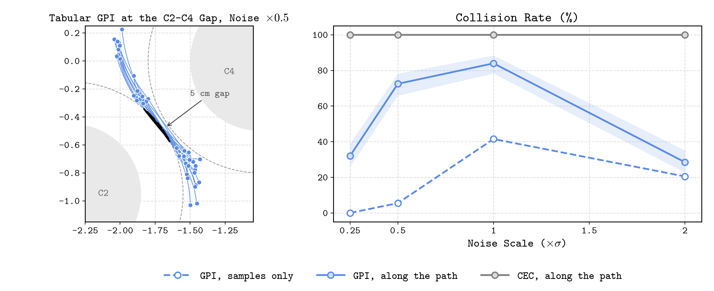
To see what happens between the samples, I checked every step along its path: the noise-free arc from the sample, with that step's noise blended in linearly, at 21 points. Counted this way, GPI collides in 72.5% of episodes at noise ×0.5 instead of 5.5%, and in 84% at ×1 instead of 41.5%. At both levels, in every episode that collides along the path but never at a sample, the first such collision is at a gap crossing. The conclusion does not hinge on how the noise is blended in: the commanded arcs alone, without any noise, enter an obstacle in 62.5% of episodes at ×0.5 and 77% at ×1. CEC still collides in every episode, and RBF GPI, which also crosses the gaps at full speed, rises to 89.5–100%.
GPI optimized exactly what I asked for: its risk term scores only the next sample, and the policy found the loophole. Checking constraints only at discrete points is a known pitfall in trajectory optimization; TrajOpt, for example, checks the swept volume between waypoints (Schulman et al., 2014), and risk-bounded planners bound the collision probability over continuous time (Jasour et al., 2021). The fix on GPI's side is a risk term that looks along the path. For every step it takes the largest collision probability at four points of the noise-free arc, with the noise growing linearly over the step (standard deviation \(s\sigma\) at fraction \(s\) of the step). For a full-speed dash through the middle of the gap, this doubles the step's risk at noise ×1 and multiplies it by nine at ×0.5. I retrained GPI with it at every noise level, about three minutes per policy.
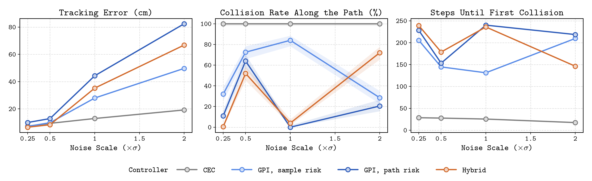
With the path-aware risk, GPI changes its decision where the loophole mattered most: at noise ×1 it detours around both lobes and collides along the path in none of the 200 episodes (against 84%), at 44 cm of tracking error instead of 28. At ×0.25 it still takes every gap, now with 11% collisions along the path instead of 32%. At ×0.5 it also keeps the gaps, and it now prices them honestly: at a crossing it predicts a 12.5% chance of a collision along the path and realizes 18%, and over an episode it collides along the path in 64% (and at a sample in 39%, up from 5.5%, because it no longer places its samples around the gap). At this noise level, a penalty of \(\lambda = 1000\) does not make the detour worth it. At ×2, where GPI already avoided the gaps, the change is small (20.5% against 28.5%) and costs tracking (82 against 50 cm).
Handing CEC the route
With the path-aware risk in both its stage cost and GPI's value, the risk-aware CEC takes the same detours as GPI at noise ×1, and collides along the path in 8% of episodes at 41 cm of tracking error. On the left-hand lobe it keeps following the reference down the outer side before it turns back; GPI turns at the top. The terminal value says the outer side leads into a dead end, but a local optimizer only compares plans near its warm start, and turning back at the top belongs to a different homotopy class. Topology-aware local planners keep several such candidates (Rösmann et al., 2017). Here the natural second candidate is GPI's own plan: at every step, IPOPT also starts from ten steps of the GPI policy on the noise-free model, and the controller keeps the cheaper of the two solutions. I'll call this the hybrid.
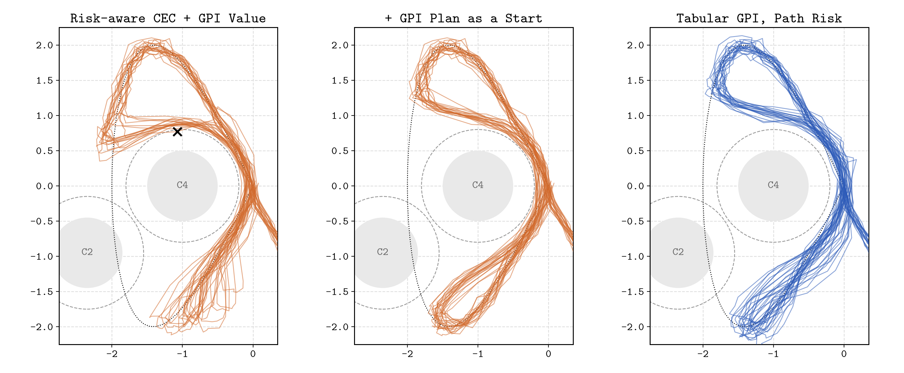
At noise ×1 the hybrid turns back at the top like GPI, collides along the path in 4% of episodes, and tracks 9 cm closer to the reference than path-aware GPI (35 against 44 cm, closer in every one of the 200 paired episodes). At ×0.25 and ×0.5 it is both safer and closer: 0.5% against 11% and 52% against 64% of episodes with a collision along the path, at 6.5 against 10.0 cm and 8.4 against 12.9 cm. At ×2 it fails, with 72% against 20.5%.
| seeds 0–199 | seeds 1000–1199 | |||||
|---|---|---|---|---|---|---|
| noise ×1 | samples (%) | path (%) | error (cm) | path (%) | error (cm) | |
| CEC | 100 | 100 | 9.6 | 100 | 9.6 | |
| GPI, sample risk | 41.5 | 84 | 27.9 | 85 | 28.0 | |
| GPI, path risk | 0 | 0 | 44.3 | 0 | 44.2 | |
| hybrid | 3.5 | 4 | 35.2 | 2 | 35.2 | |
The hybrid's remaining weakness is one it shares with every CEC here: its predictions are noise-free. GPI with noise-free transitions and the same path-aware risk shows the same pattern, 2.5% at noise ×1 and 42% at ×2, against 0% and 20.5% with noisy transitions (paired p = 0.06 and 6 × 10−7). Starting IPOPT only from GPI's plan makes ×2 worse, not better (81%), so it is the noise-free objective, not the choice of start, that prefers the risky routes. This is the case the ablation above left open: once the risk looks along the path and the noise reaches 8 cm per step, the noise in the transition matters.
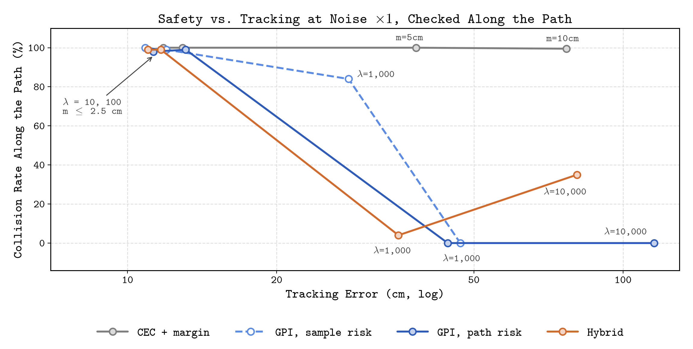
The penalty sweep gives the comparison at matched safety. With \(\lambda = 10\) or 100, every controller takes the gaps and collides along the path in 98–100% of episodes, whatever it optimizes. At \(\lambda = 1000\), the hybrid and path-aware GPI are nearly equally safe (4% and 0%), and the hybrid tracks 9 cm closer. At \(\lambda = 10{,}000\), path-aware GPI stays clear of everything at 116 cm of tracking error, while the hybrid tracks at 81 cm and collides in 35% of episodes. CEC with path constraints stays at 99.5–100% for every margin.
So, to answer the question from last time: knowing the noise was not enough. CEC needed the calibrated risk, a constraint to give that risk a gradient, GPI's value to see past its horizon, and GPI's plan to change route. With all four it is safer than path-aware GPI at low noise and nearly as safe at noise ×1, and it tracks closer at every noise level; at noise ×2 its noise-free predictions cost it that safety. Global planning chose the route, and local optimization refined it. The refinement is not cheap: the hybrid needs 272 ms per step on average in a single process, within the 500 ms control period, but its slowest 5% of steps take 1.4 s or more. Path-aware GPI needs 2.7 ms.
What this does and does not show
- The collision rates are for one simulated layout with i.i.d. Gaussian noise, not guarantees for a physical robot. Except where marked as counted along the path, they are for sampled positions.
- The discrete-time model does not define the motion between samples. The path check blends each step's noise linearly into the noise-free arc; that is one reasonable reading, and the path-aware risk uses the same one. It scores four points per step, which can only underestimate the probability that the path enters an obstacle; the check itself uses 21.
- The follow-up separates the noise model from global planning for this CEC, a ten-step NLP solved by IPOPT from a warm start. A different local optimizer might need less help from GPI. The hybrid is not a standalone CEC: it relies on GPI's offline value function and policy.
- The λ sweeps and most checks reuse seeds 0–199. Only the headline controllers of the follow-up were rerun on unseen seeds 1000–1199.
- The additive disk probability is exact because these inflated obstacles do not overlap; its combination with the workspace boundary is approximate where an obstacle extends past the square.
- The noise-free GPI policy keeps a 1 cm smoothing floor in its risk term, so the noise-free run compares deployed policies rather than a shared deterministic objective.
- The RBF results cover Gaussian kernels on a uniform lattice. Obstacle-aware features or a different compressed representation might do better.
What I'll try next
The hybrid's weakness at high noise points to the next change: predictions that carry the noise, for example a few sampled noise sequences per plan, instead of the single noise-free rollout that every CEC here uses. The path-aware risk is optimistic by construction, since four points can miss part of a step. A continuous-time bound on crossing an obstacle within a step would make it conservative instead, and it would show how much of the remaining margin depends on that choice. The other item from last time is still open: varying the width of the gap to see how the detour threshold moves. It is more interesting now, because the old threshold was partly set by the samples.
Code and data
Everything is at github.com/jnsungp/safe-trajectory-tracking: the three controllers, the GPU implementation of GPI, the experiment runner, the analysis and figure scripts, and the aggregate results behind every number in this post.
Built on the starter code of ECE 276B (Nikolay Atanasov, UC San Diego). The implementation and experiments were done with the help of AI coding assistants (Claude Code and Codex).